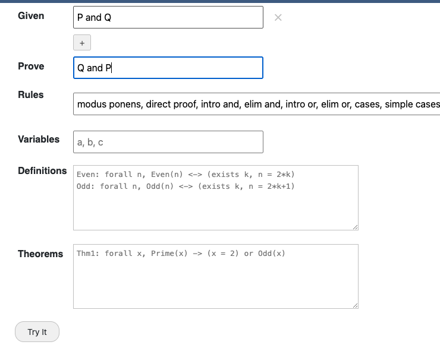
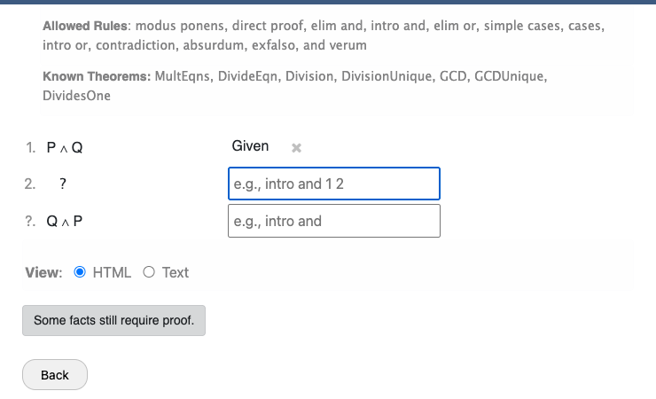

Overview
Cozy is an interactive proof assistant designed for students learning formal logic. It lets you construct proofs step by step using standard inference rules, with real-time feedback that tells you immediately whether each step is valid.
Cozy supports:
- Propositional logic — and, or, not, implies, iff, true, false
- Predicate logic — forall and exists quantifiers, custom predicates
- Arithmetic — integer expressions with +, -, *, ^, and comparisons
- Set theory — union, intersection, complement, subset, membership
- Induction — mathematical induction on natural numbers
- Algebra — automated decision procedure for linear arithmetic
Your First Proof
Let's walk through proving a simple theorem: if P and Q, then Q and P.
Step 1: State the Theorem
When Cozy loads, you see the Theorem Definition Panel. This is where you specify what you want to prove.

- Click the + button next to "Given" to add a hypothesis.
- Type
P and Qin the Given field. - In the Prove field, type
Q and P.
The fields turn red if your input has a syntax error. Once both fields have valid propositions, the Try It button becomes active.

Step 2: Enter the Proof Editor
Click Try It to enter the proof editor. You'll see:
- A preamble showing the allowed rules, known variables, and known theorems.
- The given fact
P and Qon line 1. - A forward working line where you can derive new facts.
- A backward working line showing the goal
Q and Pthat still needs proof.

Step 3: Apply Rules
We'll use forward reasoning to derive Q and P from our given P and Q:
- In the forward working line, start typing
elim and. The auto-suggest dropdown will offer completions. - Complete the rule:
elim and 1 right. This extractsQfrom line 1 (P and Q), taking the right side. - On the next forward working line, type
elim and 1 leftto extractP. - Now type
intro and 2 3to combine Q (line 2) and P (line 3) intoQ and P.

Step 4: Complete the Proof
Once Cozy detects that a forward line matches the goal, it displays a green "Your proof is complete." message. You can then:
- Click Show LaTeX to see a formal LaTeX rendering of your proof.
- Toggle between HTML and Text view modes using the radio buttons.
- Click Back to return to the theorem panel and try another proof.
Next Steps
- Learn the full declarations language syntax for writing propositions and expressions.
- See the complete proof rules reference for all available inference rules.
- Read the UI guide for a detailed explanation of every part of the interface.
- Work through more examples to build confidence.